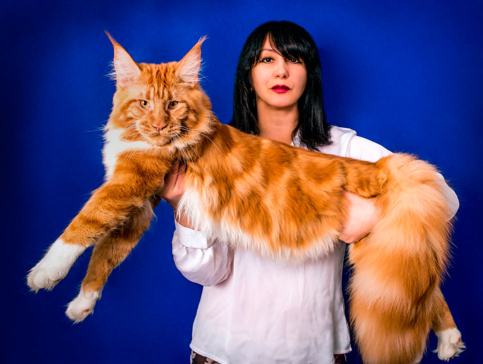

Описание

Крупнейшая порода кошек.Мейн-куны могут быть любого окраса, типичного для обычных домашних кошек, а вот искусственные окрасы, говорящие о возможной примеси других пород, такие как шоколад, лаванда, колор-поинт или типпинг, принимаются не во всех федерациях. Например, колор-поинт в окрасах мейн-кунов принят только в TICA. Самым распространённым рисунком в породе является коричневый и дымчатый табби, в России известный как «дикий» окрас.
Внешний вид Мейн-куна

Полный потенциальный размер кошки достигается в возрасте от 3 до 5 лет, в то время как у большинства других кошек — в возрасте 1 года. Однако есть и другие медленно взрослеющие породы, тоже крупного размера (например, норвежская лесная). Все особи породы мейн-кун имеют небольшие кисточки на кончиках ушей. Длина тела мейн-кунов составляет метр и более, самый длинный официально зарегистрированный мейн-кун имел тело длиной 1 метр 23 сантиметра.
Характер и повадки

Мейн-куны — дружелюбные, ласковые и уравновешенные кошки с высоким интеллектом. Их часто называют «ласковыми, нежными гигантами» за спокойный нрав и внушительные размеры.Есть и гендерные различия: считается, что кошки этой породы более покладисты и дружелюбны, а коты — своенравны и независимы.